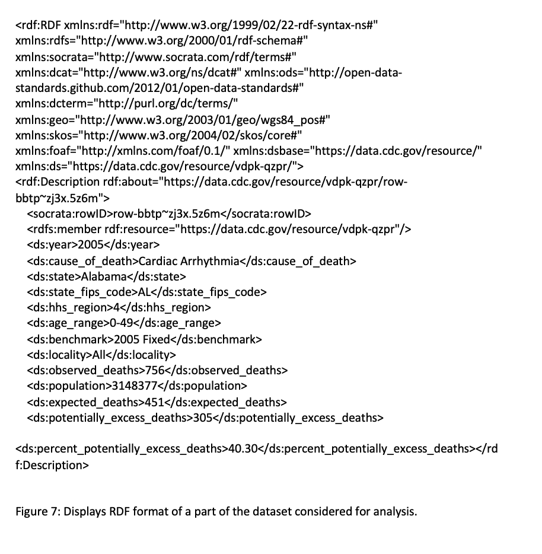
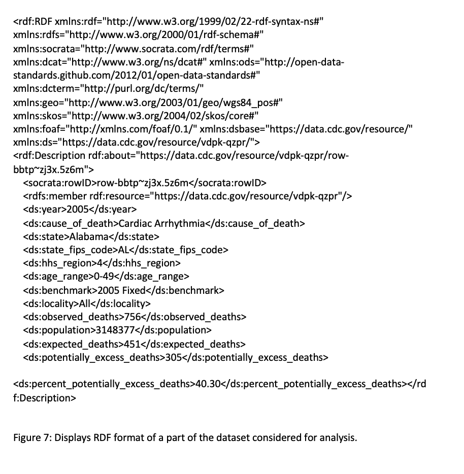

Approach
The information obtained from Nearest Hospital Spotter can be used by general population of the United States to locate nearby specialized hospitals based on their location within a particular radius, so that they can get respective treatments in quickest possible way.
The project can also be used by government officials to address the mismatch between excessive count of deaths and scarcity of hospital for a state. This statistic can help government to better allocate their health funds. With leading cause of death statistic, the government can focus on facilitating more hospitals to cure leading diseases.
After getting data from completely different sources, our aim is to extract relevant real-world patterns.
- Relationship between state-wise population and no. of hospitals
- State-wise count of death
- Nearest Specialized Hospital for a particular chronic disease
With a single dataset, we could not derive meaningful patterns. Hence, we used multiple datasets.
Below are the screenshots of the visualization made by analyzing and correlating all the three datasets using Google visualization API.

 
